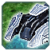
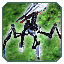
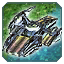
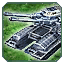

О патче
Перезагрузка
Всем привет! Патч 1.8 представляет собой откат до исходных патчей с минимальными изменениями, Начинаем с бафа снайперов заканчивая изменением командных ботов.
Дисклеймер: Внесенные изменения могут иметь непредвиденные эффекты. Если столкнётесь с одним из таких — репортите в канал баланса или на Discord GAF.
Баланс-команда: llN, Angel, Aiverse
Патч 1.8 «Перезагрузка»
Патч представляет собой пересмотренный взгляд ,на дальнейшие изменение в игре новых интересных механик на решение котроых сможет повлиять каждый игрок: Приступим к обзору .Всё ниже по списку!
Всё что имеет приписку (GAF версия ), это уникальнейшые юниты о которых вы можете узнать в прошлых патчах.
БМК (ACU)
БМК ОФЗ
Бафф
Изменены апгрейды: добавлен новый ган и щит с постоянной регенерацией.
-
Новый апгрейд гана
-
Новый апгрейд щита (постоянная регенерация, как нано-репеир)
Фикс
БМК Кибран
Ребаланс
Изменены апгрейды: улучшение экономического апгрейда перенесено на левую руку.
 БМК Эон
БМК Эон
Ребаланс
Изменены апгрейды: хроно-демпфер, щит перенесён на левую руку, исправлен баг с щитом.
Саку
Бафф
Усилены и добавлены тяжёлый рембо и диверсионный рембо пресеты.
- ОФЗ: Терминатор (тяж), Патриот (диверс)
- Кибран: Каракал (тяж), Скиталец (диверс)
- Эон: Инквизитор (тяж), Странник (диверс)
- Тяжёлый: Присет на командного бота это обновлённый ган, нанореген (либо щит), дополнительная способность.
- Диверсант: Представляет собой облегчённый вариант командного бота с улучшеным ганом и обилкой но, очень хилым которые может перемещаться в транспорте.
Наземные юниты
Снайпер Эон
Бафф
Бафф снайпера.
-
Изменения
- Энергия:
13500 17500нерф
- Масса:
700 1000Нёрф
- Время постройки:
4000 4500Нёрф
- Урон:
950 1000бафф
- Ускорена анимация стрельбыбафф
 Снайпер Серафим
Снайпер Серафим
Бафф
Бафф снайпера.
-
Изменения
- Энергия:
14000 18500Нёрф
- Масса:
780 1150Нёрф
- Время постройки:
4300 4800Нёрф
- Урон (обычный):
580 700бафф
- Урон (снайперский):
2000 780 ×3бафф
 Обсидиан
Обсидиан
Ребаланс
Ребаланс T2 танка.
-
Изменения
- Здоровье:
1250 700 Нёрф
- Прочность щита:
1500 1750 Бафф
- Потребление щита:
10 4 Бафф
- Скорость:
2.6 2.7 Бафф
- Урон:
360 320 Нёрф
- Дальность:
20 24 Бафф
Дезинтегратор щитов
Ребаланс
GAF-версия.
 Острие
Острие
Ребаланс
GAF-версия.
Селен
Ребаланс
GAF-версия.
 Аврора
Ребаланс
Бафф снайпера.
-
Изменения
- Здоровье:
155 255бафф
- Поворот корпуса при прицеливании:
120 90нерф
- Разброс:
0.01 0.05Нёрф
- Радиус стрельбы:
26 20Нёрф
- Надежность выстрела:
2 5бафф
- Задержка перед выстрелом:
0.1 0.25нерф
- Скорострельность:
0,588 0.606нерф
- Поворот башни:
60 120бафф
 Стервятник
Бафф
Бафф стервитника.
-
Изменения:
Харбенджер (Пузырек) (Гаф версия с дороботкой.)
По сути тот же харб который был у нас на сервере. Баланс команда столкнулась с проблемой энергии, то что юнит тратит 30 энергии в секунду это слишком много! 1 Харбенджеров это -30 энергии, но теперь - 10. Если увеличить число харбов, то энергии куда то испаряеться. Просто -30 энергии уходит на 1000 хп. Круто? Нет! Поэтому за Аэон теперь можно будет играть более комфортнее!
- Урон:
160 170бафф
- Радиус стрельбы:
27 29бафф
- Трата энергии для щита:
30 10бафф
 Отум
Ребаланс
Ребаланс.
- Из-за того что юнит был спецефичен и являлся самым плохим т3 юнитом, мы его немного оживили. Он остался так же самым слабым т3 юнитом, но с новой изюминкой. Теперь основная пушка Отуум стреляет как наземная стационарная турель т2 Утуушала. Дальность всех орудий стал одинаковым кроме торпедного аппарата. По сути поменялся тип стрельбы из-за чего он стал попадать по цели. Если он сталкиваеться с множеством т1 юнитов то тут главное орудие может убить от 1 до 3 юнитов! Это поможет нашему Тапку стать более уверенным на поле боя.
Изменения
- Здоровье:
4700 4800бафф
- Основное орудие: Урон в секунду:
120 240 (Теперь это основное орудие) бафф
- Основное орудие: Радиус стрельбы:
26 29бафф
- Основное орудие: Сплеш основного орудия:
1 0нерф
- Основное орудие: Скорость поворота башни:
120 90нерф
- Дополнительные орудия: Урон в секунду:
180 70нерф
- Дополнительные орудия: Радиус стрельбы:
27 29бафф
- Торпедный аппарат Урон в секунду:
30 26нерф
 Оплот
Бафф
Бафф оплота.
-
Изменения
- Энергия:
990 1450нерф
- Масса:
198 280Нёрф
- Время постройки:
880 1250Нёрф
- здоровье:
1500 2000бафф
- Урон:
35 47.5бафф
Здания
HQ модели
Фикс
Изменены модели HQ для Эон и Кибран.
Торпедные установки
Бафф
-
ОФЗ
- Скорость строительства:
1446 1400 Бафф
- Прочность:
6400 12800 Бафф
-
Кибран
- Скорость строительства:
1446 1400 Бафф
- Прочность:
5800 11600 Бафф
-
Эон
- Скорость строительства:
1446 1400 Бафф
- Прочность:
6100 12200 Бафф
-
Серафим
- Скорость строительства:
1446 1400 Бафф
- Прочность:
4800 9600 Бафф
Щит генераторы
Ребаланс
Ребаланс щит генераторов.
Щит-генераторы
- ОФЗ T3 изменение прочности щита:
17000 19000 Бафф
-
Ребаланс стоимости ED структур
Кибран T2, T3
- ED2 масса:
460 400 Бафф
- ED3 масса:
1260 1000 Бафф
- ED4 масса:
2400 1800 | щит: 13000 15000 Бафф
- ED5 масса:
4260 3000 Бафф
- Эон T3 размер купола щита:
35 36 Бафф
Инженерные станции
Бафф
Псарня
- Масса дрона:
100 50 Бафф
- Энергия дрона:
1000 500 Бафф
 Улей
Улей
- Скорость сборки:
42 55 Бафф
- Скорость постройки:
1171 1000 Бафф
Врата
GAF-версия.
Морские юниты
 Атлантис
Атлантис
Ребаланс
GAF-версия.
Кибран морские юниты
Ребаланс
Откат до старой версии.
 Эон морские юниты
Эон морские юниты
Ребаланс
Откат до старой версии.
 Серафим морские юниты
Серафим морские юниты
Ребаланс
Откат до старой версии.
Missile Ship
Фикс
Баг-фикс.
Воздушные юниты
 Истрибитель Офз
Истрибитель Офз
Ребаланс
GAF-версия.
Истрибитель Кибран
Ребаланс
GAF-версия.
Swift Wind
Ребаланс
GAF-версия
Soul Ripper
Ребаланс
GAF-версия